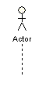
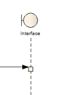
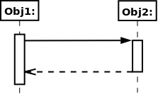
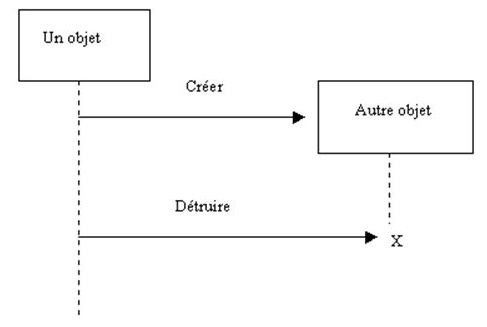
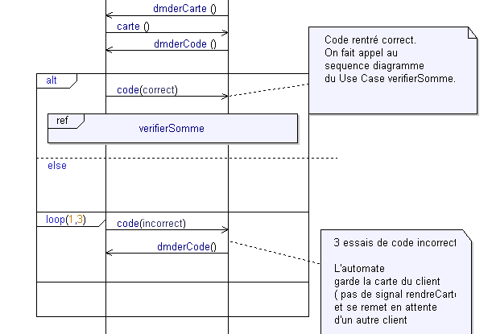
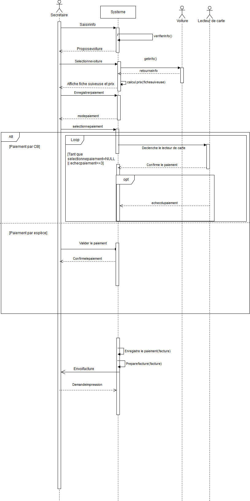

Les diagrammes de séquence
Qu'est-ce que les diagrammes de séquence ?
Les diagrammes de séquence décrivent les intéractions entre les acteurs et le système avec un ordre chronologique.
Notation
Ligne de vie
C'est une ligne en pointillé représentant la vie d'un objet ou d'un acteur. Le système est représenté réctangulairement, l'interface avec un cercle, et les acteurs par un bonhomme.
Exemple de ligne de vie d'un acteur :

Ligne de vie d'une interface :

Interaction (message)
Il existe plusieurs intéractions, dans un diagramme de séquence les intéractions se font entre les différentes lignes de vies, il y a des intéractions pour appeler une méthode, des intéractions pour envoyer un signal ou encore des messages pour créer un objet. Les messages sont représentés par une flèche à part dans le cas où il y a création d'objet ou on met un trait en pointillé pour dire qu'il y a eu création d'objet. Il peut également y avoir une réponse à un message qui est représenté par une flèche en pointillé, on appelle ça un message synchrone.
Exemple de message synchrone :

Un message asynchrone n'aurait pas eu de retour en pointillé
Exemple de construction et de déstruction d'objet

Boucle, condition et option
Les trois se répresente avec un rectangle ayant en haut à gauche "loop" pour boucle, "alt" pour condition et "opt" pour option. Pour la boucle il doit y avoir marqué combien de fois l'action doit se faire tandis que alt doit dire les conditions à respecter pour faire ceci mais pas celà et opt simplement ce qui permet de faire l'option.
Exemple :

Dans ce cas soit le code est correct et tout se passe bien soit le code est incorrect et on rentre dans une boucle qui refera les actions trois fois maximum c'est à dire si on a plus de trois échec alors le code ne sera plus vérifié.
Faire le diagramme de séquence
- La secrétaire saisit les informations sur la voiture.
- Le système lui propose les voitures correspondant aux informations saisies.
- La secrétaire sélectionne une des voitures.
- Le système affiche les informations sur la voiture, plus les réparations réalisées, restantes, … et le prix dû.
- La secrétaire demande à enregistrer un paiement.
- Le système lui demande si c'est par CB ou en espèce.
- La secrétaire sélectionne par CB.
- Le système déclenche le lecteur de carte avec le prix dû.
- Le lecteur de carte confirme le paiement au Système.
- Le système enregistre le paiement, prépare la facture et propose de l'imprimer.
- La secrétaire demande l'impression de la facture.
En ajoutant :
Paiement en espèce : la secrétaire valide que le paiement a été effectué.
On veut la possibilité d'interrompre le paiement en cas d'absence de moyen de paiement ou de plus de 3 tentatives de paiement.
Cas 1 : On fait la ligne de vie de secrétaire qui sera acteur et la ligne de vie de notre système on aura une flèche de secrétaire à système car la secrétaire saisit les informations. On aura également une méthode verifie info dans le système pour savoir si les informations entrées par la secrétaire sont acceptable, on va faire une relation reflexive.
Cas 2 : Le système répond c'est donc un message synchrone.
Cas 3 : La secrétaire sélectionne des voitures donc la flèche va jusqu'à la ligne de vie du système.
Cas 4 : Le système doit afficher le prix et les informations sur la voiture alors pour récuperer les informations il faut faire un get à la ligne de vie de la voiture, il faut donc représenter voiture dans le diagramme de séquence pour qu'ensuite nous ayons un retour de la voiture (le retour étant les informations) et avec ces informations le système calcul le prix et retourne les informations qu'il a obtenu ainsi que le prix.
Cas 5 : La secrétaire demande à enregistrer un paiement, une fois de suite une flèche qui va jusqu'au système.
Cas 6: Le système répond, donc c'est un message synchrone, une flèche entre pointillé qui va de système à secrétaire en demandant quel est le mode de paiement.
Cas 7 : La secrétaire demande par CB donc il y aura une flèche jusqu'au système.
Cas 8 : Le système déclenche le lecteur de carte donc il y aura une action du système au lecteur de carte il faudra faire une ligne de vie du lecteur de carte.
Cas 9 : On aura un retour du lecteur de carte donc une flèche en pointillé du lecteur de carte au système.
On aura ceci :
Cas 10 : Le système enregistre le paiement,prépare la facture et demande de l'imprimer donc on aura deux flèches reflexives qui sont enregistrer le paiement et preparer la facture qui seront des méthodes ayant pour attribut la facture. On aura une flèche du système à la secrétaire qui sera envoi facture
Cas 11 : la secrétaire demande l'impression donc on aurau ne flèche de secrétaire à système.
En prenant compte le "en ajoutant" on aura un alt qui permettra de pouvoir effectuer deux modes de paiement qui sont par CB ou pas espèce. Quand la personne choisit par espèce il y aura un valider le paiement qui va de secrétaire à système.
Pour interrompre le paiement au bout de 3 fois il faut faire une boucle qui permet de compter le nombre d'echec de paiement, tant que selectionnerpaiement==NULL et echecdepaiement inférieur ou égal à 3 il y aura la boucle si ça dépasse on arrête le paiement.
Nous obtenons ceci :

A retenir
Il n'y aura jamais d'intéraction entre deux acteurs dans le diagramme de séquences.